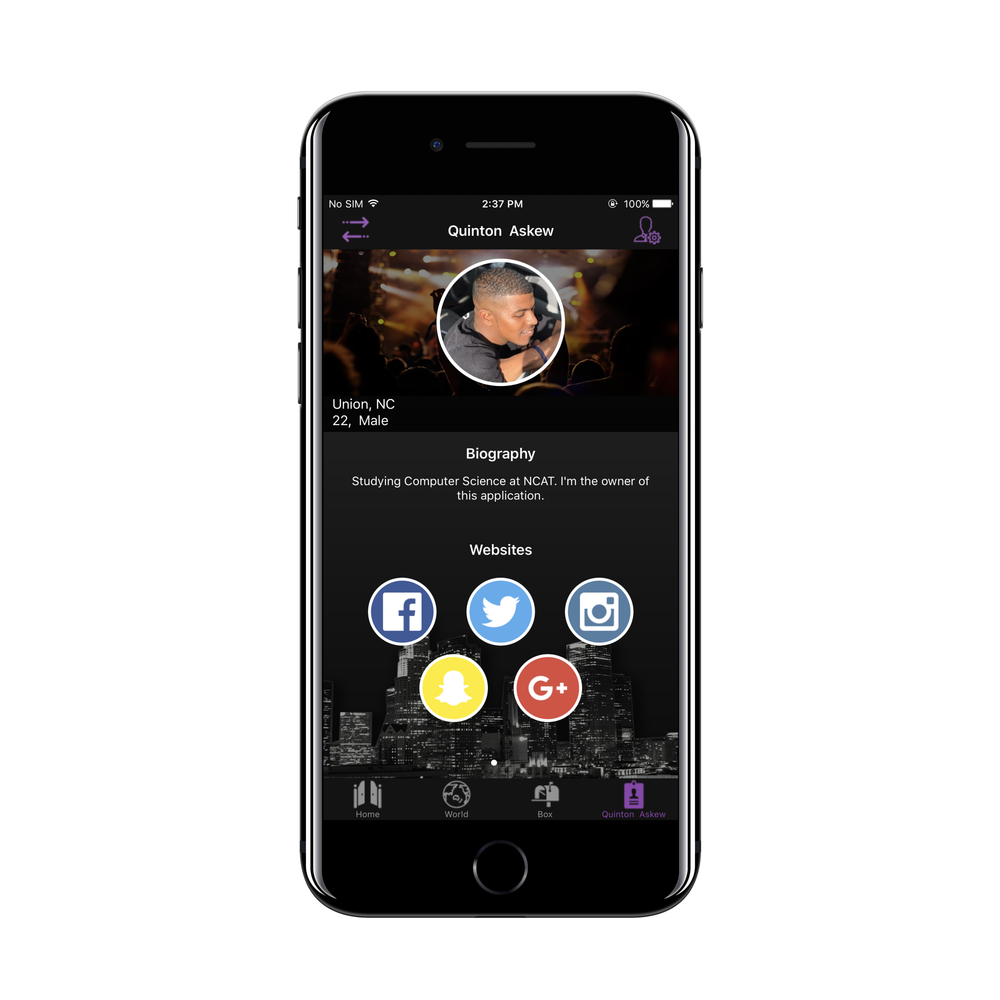

Jugg
Host Events and Filter Guests


Here you’ll see all events within 100 miles of your current location, giving you things to do wherever you go. You’ll also see events hosted by those you follow, no matter the distance!
Our Discover segment (located in the World tab) allows you to view other Jugg App users that are within 100 miles from your current location. We were aware of how many users that could potentially, so we implemented a slider that allows you toggle from 1 mile, to 100.
To prevent false identification, we integrated SDK’s from your favorite social media apps. This allows users to verify their identity by signing into their accounts on the different platforms. View their profiles on the different platforms directly from the app.